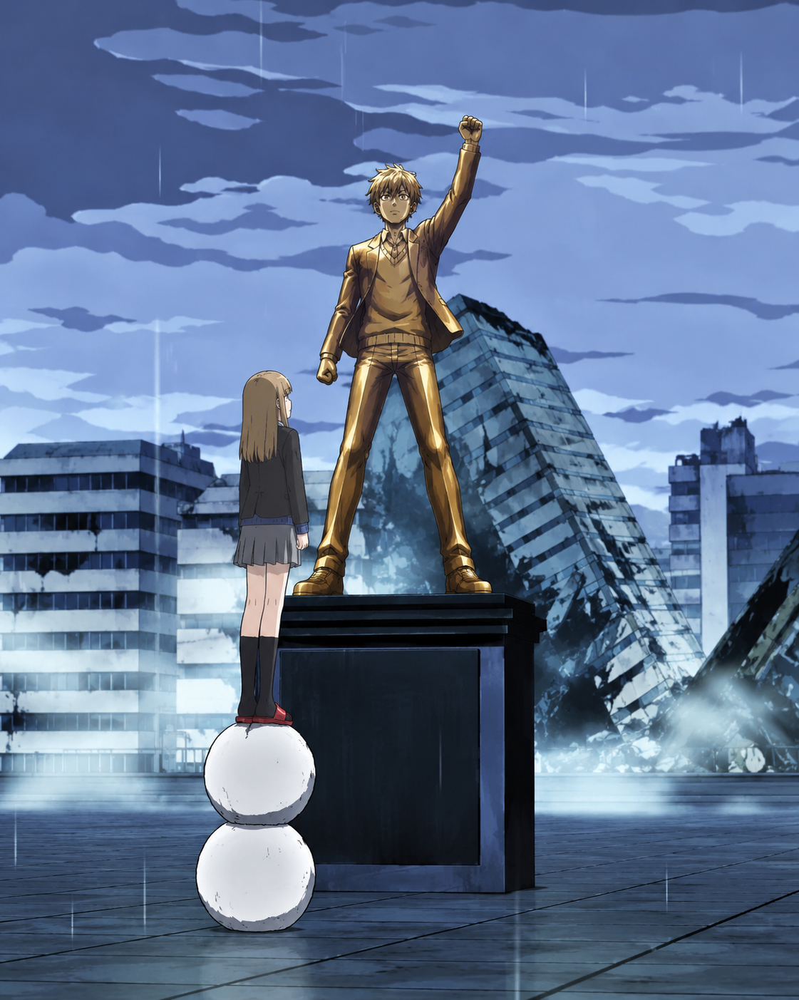

Aunque no veas la cumbre, sigue escalando
El cuaderno de bitácora de todo lo que vemos: lo que ya hemos escalado, lo que toca hoy y lo que espera más arriba en la montaña.

Ballknowledge Academy es donde llevamos la cuenta de cada anime que vemos juntos: notas, desgloses, qué toca hoy y qué está esperando su turno. Nada de listas sueltas ni notas en el móvil que se pierden — todo en un mismo sitio, siempre a mano.
Cada montaña escalada (cada anime terminado) se queda registrada con su puntuación final y su desglose completo. Las que aún no hemos empezado esperan en la cola, listas para cuando decidamos seguir subiendo.
Lo que toca ver hoy, directo del calendario
Un 10 al azar de la sala de trofeos
Algo de la lista de planeados que promete demasiado
Un tropiezo al azar, para recordar que no todo iba a ser perfecto
Cada reseña se desglosa en estas categorías antes de llegar a la nota final. Puedes ver el detalle completo de cada anime en el apartado de Reseñas.
Fotos y momentos sueltos de todo esto. Aquí es donde se ve que detrás de las notas y las tablas hay gente disfrutando de verdad.
La comunidad es la mitad de la gracia de todo esto: sin quien vea el mismo capítulo el mismo día, sin quien discuta si la nota está bien puesta o sin quien mande el gif exacto en el momento exacto, esto sería solo una lista más. Así que gracias por estar — según vayan pasando cosas, iremos dejando aquí las novedades, los momentos random y lo que vaya surgiendo.